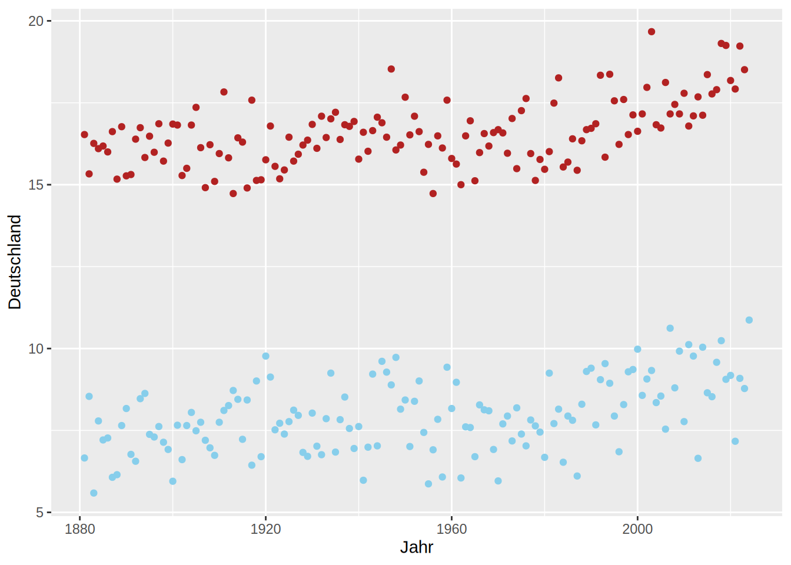
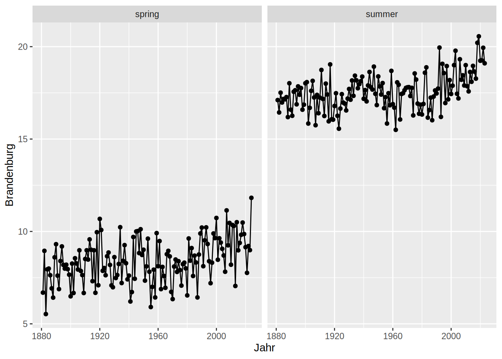
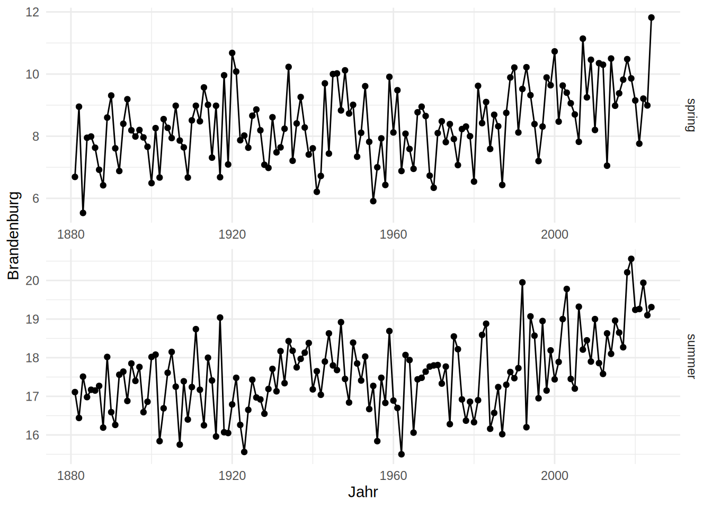
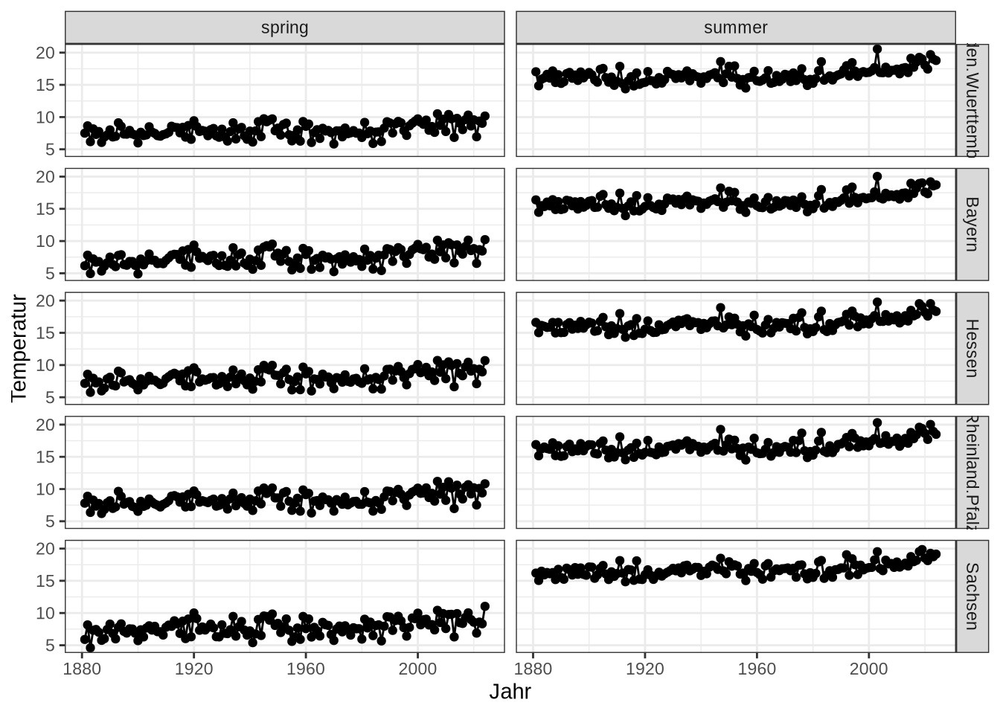
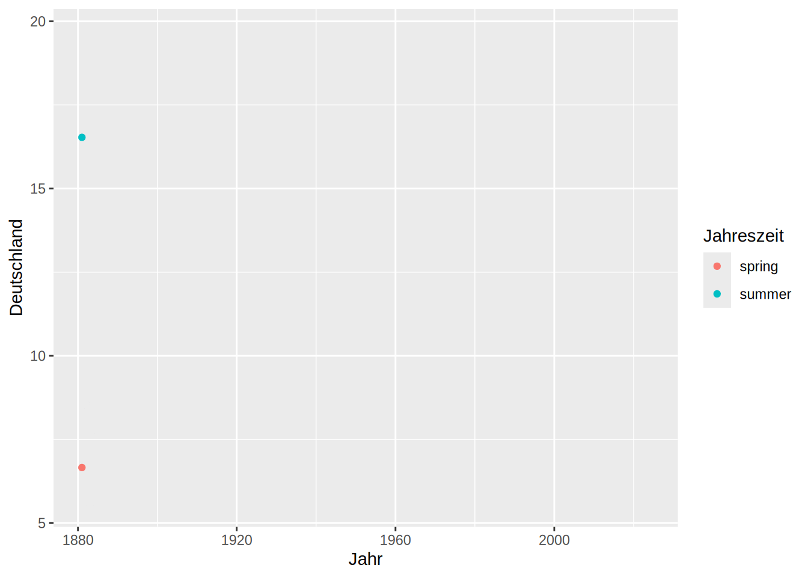

library(tidyverse) # ggplot2 is part of the tidyverseggplot2 advanced
Using multiple datasets in the same plot
Code
# data sources:
# https://opendata.dwd.de/climate_environment/CDC/regional_averages_DE/seasonal/air_temperature_mean/regional_averages_tm_spring.txt
# https://opendata.dwd.de/climate_environment/CDC/regional_averages_DE/seasonal/air_temperature_mean/regional_averages_tm_summer.txt
dwd_spring = read.csv("data/dwd_spring_temperature.txt",
skip = 1,
sep = ";")
colnames(dwd_spring)[2] <- "Jahreszeit"
dwd_summer = read.csv("data/dwd_summer_temperature.txt",
skip = 1,
sep = ";")
colnames(dwd_summer)[2] <- "Jahreszeit"head(dwd_spring, n = 3) Jahr Jahreszeit Brandenburg.Berlin Brandenburg Baden.Wuerttemberg Bayern
1 1881 spring 6.71 6.69 7.50 6.17
2 1882 spring 8.97 8.95 8.64 7.81
3 1883 spring 5.54 5.53 6.18 4.95
Hessen Mecklenburg.Vorpommern Niedersachsen Niedersachsen.Hamburg.Bremen
1 7.15 5.54 6.62 6.62
2 8.57 8.14 8.95 8.96
3 5.76 4.98 5.92 5.93
Nordrhein.Westfalen Rheinland.Pfalz Schleswig.Holstein Saarland Sachsen
1 7.60 7.80 5.57 8.28 5.90
2 9.28 8.88 8.40 9.28 8.16
3 6.59 6.37 5.61 6.92 4.60
Sachsen.Anhalt Thueringen.Sachsen.Anhalt Thueringen Deutschland X
1 6.76 6.42 5.99 6.66 NA
2 9.01 8.55 7.98 8.54 NA
3 5.63 5.20 4.66 5.59 NAhead(dwd_summer, n = 3) Jahr Jahreszeit Brandenburg.Berlin Brandenburg Baden.Wuerttemberg Bayern
1 1881 summer 17.13 17.11 17.03 16.39
2 1882 summer 16.45 16.44 14.85 14.46
3 1883 summer 17.52 17.51 15.87 15.50
Hessen Mecklenburg.Vorpommern Niedersachsen Niedersachsen.Hamburg.Bremen
1 16.62 16.12 16.24 16.24
2 15.02 16.19 15.71 15.72
3 16.15 16.66 16.35 16.36
Nordrhein.Westfalen Rheinland.Pfalz Schleswig.Holstein Saarland Sachsen
1 16.66 16.90 15.80 17.19 16.20
2 15.48 15.16 16.10 15.33 15.05
3 16.37 16.23 16.31 16.42 16.49
Sachsen.Anhalt Thueringen.Sachsen.Anhalt Thueringen Deutschland X
1 16.88 16.46 15.95 16.53 NA
2 16.02 15.41 14.64 15.33 NA
3 17.14 16.57 15.84 16.26 NAIf we have two datasets with similar structure, e.g. the same data for spring and summer, you can use both sets in the same plot by specifying the according data frame in the geom_ functions. Here we use the same mapping for both sets of points, so we can define the mapping only once in the main ggplot function. If your variables are not the same in both datasets, you also need to redefine the mapping in the geom_ function.
ggplot(mapping = aes(x = Jahr, y = Deutschland))+
geom_point(data = dwd_spring, color = "skyblue")+
geom_point(data = dwd_summer, color = "firebrick")
Facets
Facets divide the data you want to plot along a specific variable. E.g when we combine the spring and summer temperature from our DWD data, we can create a facet along the Jahreszeiten column to produce the same plot for spring and summer accordingly:
dwd = rbind(dwd_spring, dwd_summer)
ggplot(dwd, aes(x = Jahr, y = Brandenburg))+
geom_line()+
geom_point()+
facet_wrap(facets = "Jahreszeit")
Of course, facet_wrap also has many options to alter the plot to ones desire. Again, have a look at the help page - it is very helpful. Try to figure out for yourself what kind of effects the arguments in the following facet_wrap make on the plot.
ggplot(dwd, aes(x = Jahr, y = Brandenburg))+
geom_line()+
geom_point()+
facet_wrap(facets = "Jahreszeit",
ncol = 1,
scales = "free",
strip.position = "right")+
theme_minimal()
Besides facet_warp, there is facet_grid with slightly different argument options. Here you can define cols and rows as your facet variables.
dwd_long = tidyr::pivot_longer(data = dwd, cols = !all_of(c("Jahr", "Jahreszeit")),
names_to = "Bundesland",
values_to = "Temperatur")
dwd_long = dwd_long |> filter(Bundesland %in% c("Bayern", "Baden.Wuerttemberg", "Rheinland.Pfalz", "Hessen", "Sachsen"))
ggplot(dwd_long, aes(x = Jahr, y = Temperatur))+
geom_line()+
geom_point()+
facet_grid(rows = vars(Bundesland),
cols = vars(Jahreszeit))+
theme_bw()
Graphical Devices
Every time you create a plot, R needs to know where to draw something. This is called the device - you canvas, so to say. In RStudio, your device is by default automatically set to RStudioGD which refers to the plot window in RStudio. You can check you current device with
dev.cur()You can find a list of devices in the help page ?Devices. With the functions you find there you can switch to a different graphic device. For example, use pdf() and your plots will be drawn into a pdf file instead of the RStudio plot window. Once you finished plotting, use dev.off() to turn the device off.
pdf(filename = "nice_plot.pdf")
ggplot(dwd_summer, aes(x = Jahr, y = Deutschland))+
geom_line()
dev.off()Personally, I often use vector graphics with the svg() device. The plots from R, even with ggplot2 often need some minor tweaks like making the legend a little bit bigger that are too finicky for me to do with code. Instead, I use inkscape for some cosmetic changes in the svg graphic and export it there as a pdf or png. Make sure, however, that you do not alter the actual information that is communicated in the plot!
Animations
The gganimate package expands the ggplot syntax with functions that deal with plot animations. Have a look at gganimate.com/ for examples and explanations.
install.packages("gganimate")
install.packages("gifski") # has to be installed for gif outputlibrary(gganimate)
ggplot(dwd, aes(x = Jahr, y = Deutschland, color = Jahreszeit))+
geom_point()+
gganimate::enter_grow()+
gganimate::transition_states(Jahr, wrap = FALSE, transition_length = 5, state_length = 10)+
gganimate::shadow_mark()